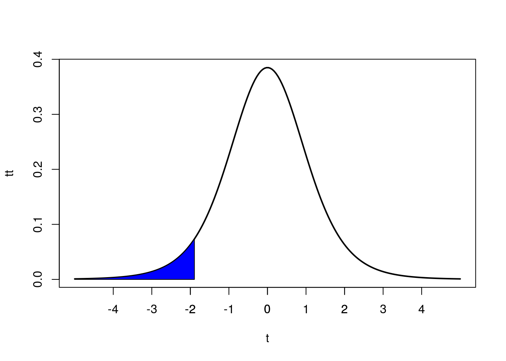
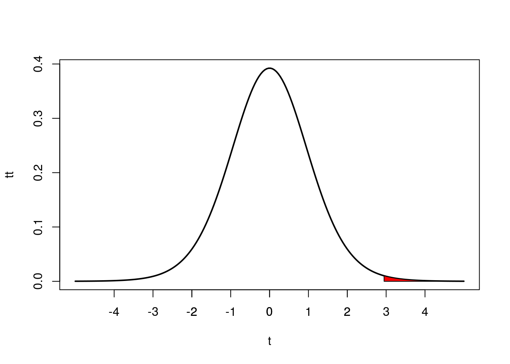
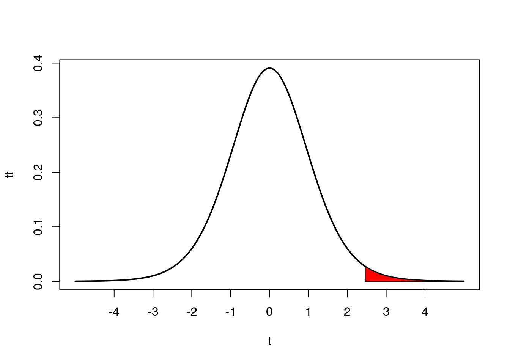
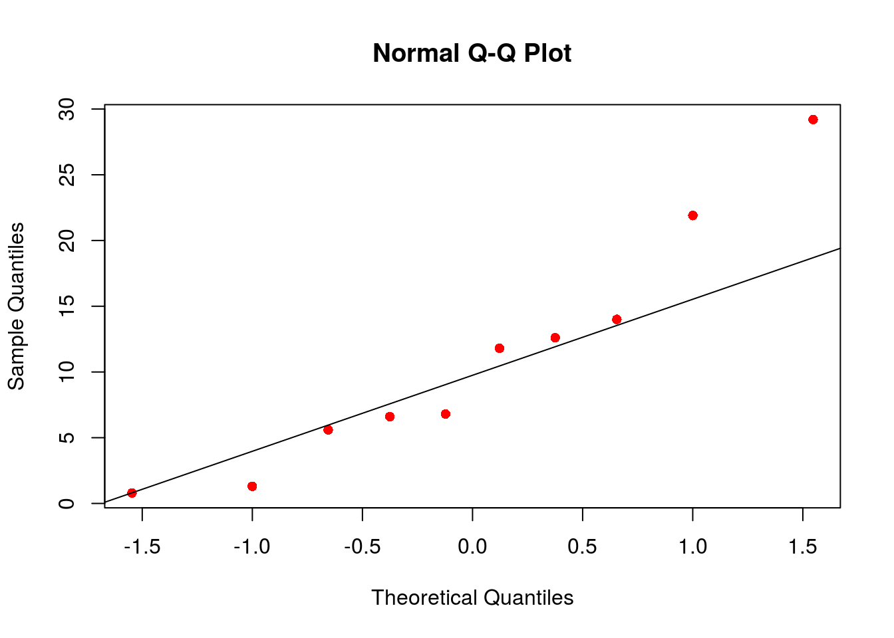

Solución Tarea # 8
Usaré la siguiente función para el problema 1.
t_area <- function(p,v,low.T = TRUE){
if (low.T == TRUE) {
t <- seq(-5,5,length=200)
q <- qt(p,v)
tt <- dt(t,v)
plot(t,tt,type="l", lwd=2, col="black")
t=seq(-5,q,length=200)
tt=dt(t,v)
polygon(c(-5,t,q),c(0,tt,0),col="blue")
axis(side = 1, at=-3:3)
} else {
t <- seq(-5,5,length=200)
q <- qt(p,v,lower.tail = FALSE)
tt <- dt(t,v)
plot(t,tt,type="l", lwd=2, col="black")
t=seq(q,5,length=200)
tt=dt(t,v)
polygon(c(q,t,5),c(0,tt,0),col="red")
axis(side = 1, at=-3:3)
}
}Problema 1
Suponga que \(t\) es una distribución \(t\)-Student. Es decir \(t(v)\), donde \(v\) son los grados de libertad. Use RStudio o una tabla de probabilidades \(t\)-Student para calcular los siguientes valores críticos de \(t\): (Haga una gráfica que ilustre la información solicitada en cada caso).
\(t_{(\alpha,v)}\), si \(v=7\) y \(\alpha=0.05\) a cola izquierda.
qt(0.05,7)## [1] -1.894579t_area(0.05,7,low.T = TRUE)
\(t_{(\frac{\alpha}{2},v)}\), si \(v=15\) y \(\alpha=0.01\) a cola derecha.
\[\dfrac{\alpha}{2}=\dfrac{0.01}{2}=0.005\]
qt(0.005,15)## [1] -2.946713t_area(0.005,15,low.T = FALSE)
\(t_{(\frac{\alpha}{2},v)}\), si \(v=12\) y \(\alpha=0.03\) a cola derecha.
qt(0.015,12)## [1] -2.4607t_area(0.015,12,low.T = FALSE)
Problema 2
Suponga que deseamos estimar el tiempo promedio de la vida útil en un tipo de bombilla. Para tal fin se tomó una muestra aleatoria de tamaño n=10 referente al tiempo de vida. El tiempo se mide en meses. Los datos son los siguientes:
set.seed(123456)
TiempoVida <- round(rexp(10,0.09),1)
print(TiempoVida)## [1] 6.6 5.6 14.0 11.8 12.6 21.9 0.8 29.2 1.3 6.8Con base en los datos y la información anterior, conteste las siguientes preguntas:
¿Cuál es el parámetro de interés?
El tiempo promedio de vida en un tipo de bombilla.
Calcule una estimación puntual para el parámetro de interés
Una estimación puntual para el tiempo de vida promedio está dada por la media muestral \(\bar{X}\)
mean(TiempoVida)## [1] 11.06Encuentre un intervalo de confianza para el parámetro de interés con una confiabilidad del 95 %. Asuma que los datos provienen de una distribución Normal.
Como la varianza poblacional es desconocida, debemos usar el intervalo t-Student. Donde la desviación estándar la calculamos usando la muestra.
sd(TiempoVida)## [1] 8.984579Entonces tenemos que:
\(\bar{X}=11.06\)
\(S = 8.9845\)
\(n = 10\)
\(\alpha = 0.05\)
\(\dfrac{\alpha}{2}=0.025\)
Necesitamos \(t_{(0.025,9)}\). Usamos R
qt(0.025,9,lower.tail = FALSE)## [1] 2.262157Límite Inferior: \(\bar{X} - t_{(\frac{\alpha}{2},n-1)}\dfrac{S}{\sqrt{n}}= 11.06 - 2.2621 * \dfrac{8.9845}{\sqrt{10}}=4.6330\)
Límite Superior: \(\bar{X} + t_{(\frac{\alpha}{2},n-1)}\dfrac{S}{\sqrt{n}}=11.06 + 2.2621 * \dfrac{8.9845}{\sqrt{10}}=17.4869\)
Entonces el intervalo esta dado por:
\[\bigg(4.6330 , 17.4869\bigg) \; \text{meses}\]
También podemos usar RStudio para encontrar el intervalo de confianza:
t.test(x = TiempoVida, conf.level = 0.95)
One Sample t-test
data: TiempoVida
t = 3.8928, df = 9, p-value = 0.00366
alternative hypothesis: true mean is not equal to 0
95 percent confidence interval:
4.632819 17.487181
sample estimates:
mean of x
11.06 Interprete el intervalo que encontró en la parte c).
Estamos seguros con una confianza del 95 % en que el tiempo promedio del tipo de bombilla está entre \(4.63\) y \(17.48\) meses.
Compruebe el supuesto de Normalidad en los datos.
Debemos comprobar el supuesto de normalidad.
qqnorm(TiempoVida,pch=16,col = "red")
qqline(TiempoVida)
No es aceptable suponer que estos datos provienen de una población que tiene distribución Normal. Dado que hay presencia de outliers que pueden indicar que la distribución poblacional es sesgada.
Problema 3
Se ha llegado a la conclusión que el tiempo de espera en todas las rutas del TROLLEY en el colegio sigue una distribución Normal, de donde se sabe que \(\sigma=10\) minutos. Estamos interesados en estimar el tiempo promedio que esperan todos los usuarios Colegiales para tomar el servicio de TROLLEY, para este propósito se recolectaron 12 datos del tiempo de espera en usuarios. El tiempo está en minutos:
## [1] 19 30 44 17 27 29 35 26 48 27 32 38Con base en los datos, conteste las siguientes preguntas:
Calcule mediante estimación puntual el tiempo que en promedio esperan todos los usuarios del TROLLEY en el Colegio.
waitingTime_trolley <- c(19, 30, 44, 17, 27, 29, 35, 26, 48, 27, 32, 38)Una estimación puntual para el tiempo de espera promedio poblacional está dado por la media muestral:
mean(waitingTime_trolley)## [1] 31Es decir, que en promedio, todos los usuarios del trolley esperan 31 minutos.
Calcule un intervalo de confianza con una confiabilidad del 90 %.
Entonces tenemos que:
\(\bar{X}=31\)
\(\sigma = 10\)
\(n = 30\)
\(\alpha = 0.10\)
\(\dfrac{\alpha}{2}=0.05\)
Necesitamos \(Z_{0.05}\). Usamos R
qnorm(0.05,lower.tail = FALSE)## [1] 1.644854Límite Inferior: \(\bar{X} - Z_{\alpha/2}\dfrac{\sigma}{\sqrt{n}}=31 - 1.644*\dfrac{10}{\sqrt{30}}=26.25\)
Límite Superior: \(\bar{X} + Z_{\alpha/2}\dfrac{\sigma}{\sqrt{n}}=31 + 1.644*\dfrac{10}{\sqrt{30}}=35.74\)
Entonces el intervalo esta dado por:
\[\bigg(26.25 , 35.74\bigg) \; \text{minutos}\]
También podemos usar RStudio para encontrar el intervalo de confianza con \(\sigma\) conocida.
library(BSDA)
z.test(x = waitingTime_trolley, sigma.x = 10, conf.level = 0.90)
One-sample z-Test
data: waitingTime_trolley
z = 10.739, p-value < 2.2e-16
alternative hypothesis: true mean is not equal to 0
90 percent confidence interval:
26.25172 35.74828
sample estimates:
mean of x
31 Interprete el intervalo de confianza.
Estamos seguros con una confianza del 90 % en que el tiempo promedio de espera para tomar el trolley está entre \(26.25\) y \(35.74\) meses.
Vuelva a calcular el intervalo en la parte b), pero ahora con una confiabilidad del 99 %. ¿Qué sucede con la anchura del intervalo? Explique!
library(BSDA)
z.test(x = waitingTime_trolley, sigma.x = 10, conf.level = 0.99)
One-sample z-Test
data: waitingTime_trolley
z = 10.739, p-value < 2.2e-16
alternative hypothesis: true mean is not equal to 0
99 percent confidence interval:
23.56422 38.43578
sample estimates:
mean of x
31 Ahora el intervalo de confianza es:
\[\bigg(23.56 , 38.43\bigg) \; \text{minutos}\]
Podemos observar que al aumentar el nivel de confianza del 90 % al 99 % el intervalo se hizo más ancho.